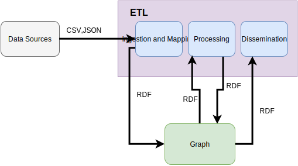
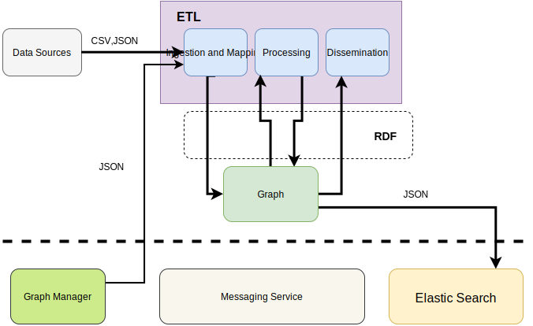

ETL Artifacts
The Workflow Component ETL artifact consists of three main components as depicted in Figure 1:
- Ingestion and Mapping
- Processing
- Dissemination
Other ETL components could be added to the ETL stack with the purpose of enhancing the results. Examples include:
- NER for extracting Places, Organization etc.
- Data converters

Figure 1. ETL Data Workflow
Some of the uses of the ETL workflow include: inferencing, updating Public APIs, Transformation, updating ElasticSearch via the Graph (GM - Graph Manager component). Graph Manager component also can provide input to the ETL components further enriching the information contained in the platform.
A draft overview on the Semantic Broker components is provided in Figure 2.

Figure 2. ETL Platform Component Workflow
Comparison of ETL Artifacts
The table below shows a basic comparison of some of the ETL tools and required functionalities with relation to the ATTX project.
| Tool | Workflows | Activities | REST API | Plugins | UI | License |
|---|---|---|---|---|---|---|
| Wings | Yes | Yes ? | No ? | No ? | Yes | Apache 2.0 |
| LinkedPipes | Yes | Yes | Yes | Yes ? | Yes | MIT |
| DSwarm | ? Maybe Transformations | ? Maybe Transformations | Yes | No ? | Yes | Apache 2.0 |
| Web-Karma | No, although there is Batch Mode | No, although there is Batch Mode | Yes | Yes, kinda | Yes | Apache 2.0 |
| UnifiedViews | Yes | Yes | Yes (Limited) | Yes | Yes | GPL 3.0 |
| FluidOps | ? | ? | ? | Yes ? | Yes | Commercial |
| Silk Framework | Yes, Tasks | Yes, Workspace | Yes | Yes | Yes | Apache 2.0 |
| Pentaho | Maybe ? via Jobs | Maybe ? via Jobs | No ? | Yes | Yes | Apache 2.0 |